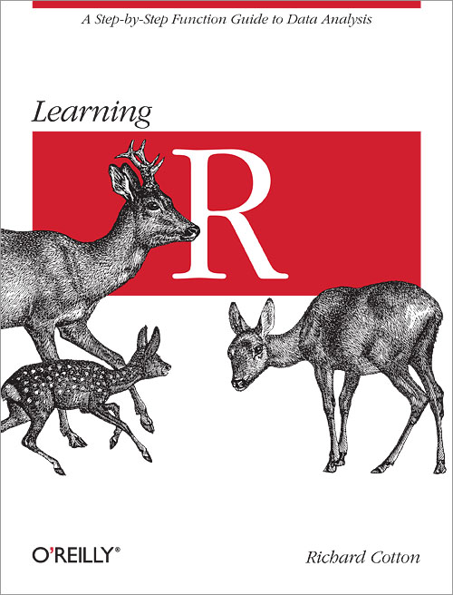
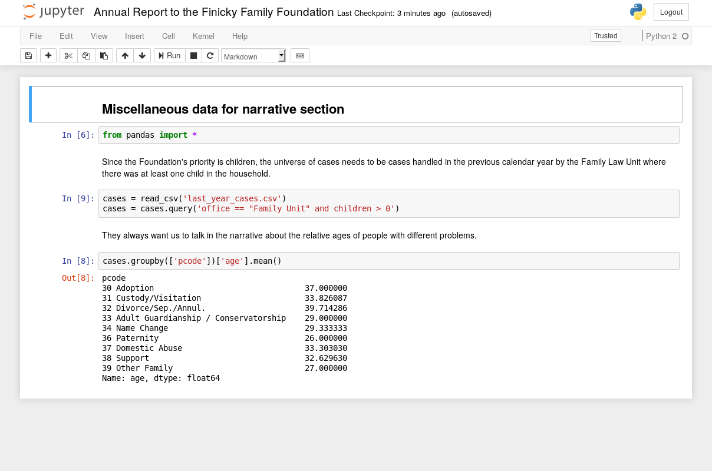

Open and Collaborative Methods of Legal Services Program Administration in the Age of Automation
Innovations in Technology Conference
New Orleans, January 2018
The presenters
- Nathan Vogel, Director of Law and Technology, Community Legal Services
GitHub username: NateV - Jonathan Pyle, Contract Performance Officer, Philadelphia Legal Assistance
GitHub username: jpylephilalegal
Reproducible Research
Using R
Using Python
Using Jupyter Notebooks
Behavior Driven Development (BDD)
and automated testing
What is BDD?
- Merges specification of requirements with validation testing
- Includes non-techies in the development process
- Makes non-techies more responsible
- Provides iterative process for developing system and ensuring validity
Testing
Why is it important?
- Does the system do what it should?
- Can it handle unusual situations?
- It might work now, but if it breaks, will you know?
Cucumber
Lettuce
Example
On-line intake system for pro bono divorce clinic
Example
Automating processes in Legal Server
Version Control Systems
Why use them?
- Peace of mind
- Transparency
- Reproducibility
- Collaboration